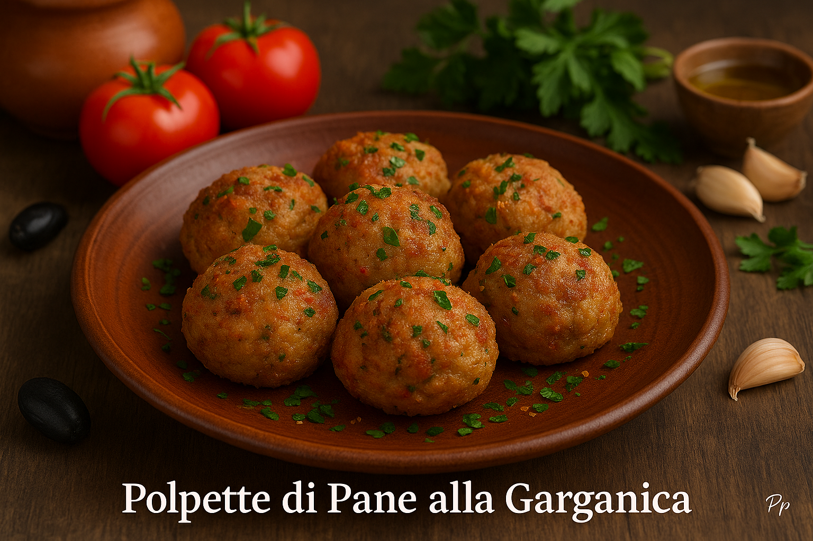

Polpette di Pane alla Garganica
Ces boulettes rustiques du Gargano sont nées pour ne rien gaspiller : on y mélange du pain rassis, du pecorino, de l’ail, du persil et un filet d’huile d’olive. Dorées à la poêle, elles sont croustillantes dehors et moelleuses dedans — un vrai goût des Pouilles.
Ingrédients (pour 4 personnes)
- 300 g de pain rassis
- 100 ml de lait tiède
- 50 g de pecorino râpé
- 2 c. à soupe de persil haché
- 2 gousses d’ail émincées
- 2 œufs
- Huile d’olive pour la cuisson
- Sel et poivre
Préparation pas à pas
- Ramollir le pain : couper et imbiber 10 minutes dans du lait tiède.
- Émietter : presser pour enlever l’excès de lait, puis émietter finement.
- Assaisonner : ajouter pecorino, ail, persil, œufs, sel, poivre.
- Former : rouler des boulettes de 4 cm.
- Cuire : dorer 8–10 minutes à la poêle dans l’huile d’olive.
- Servir : chaud ou tiède, avec salade ou sauce tomate.
Astuce du chef
Ajoute un peu de câpres ou d’olives hachées pour un parfum typiquement garganique !
Origine & sens du mot « Garganica »
Les polpette di pane viennent du Gargano, où l’on réutilise le pain dur pour des plats simples mais généreux.
🕊 Signification de « Garganica » :
Le mot vient du Gargano, la péninsule montagneuse au nord des Pouilles. En italien : Garganico / Garganica = « originaire du Gargano », « à la manière du Gargano ».
✔ Garganico = masculin ✔ Garganica = féminin (parce que polpetta est féminin)
Exemples : alla Barese, alla Leccese, alla Garganica.
Le mot vient du Gargano, la péninsule montagneuse au nord des Pouilles. En italien : Garganico / Garganica = « originaire du Gargano », « à la manière du Gargano ».
✔ Garganico = masculin ✔ Garganica = féminin (parce que polpetta est féminin)
Exemples : alla Barese, alla Leccese, alla Garganica.